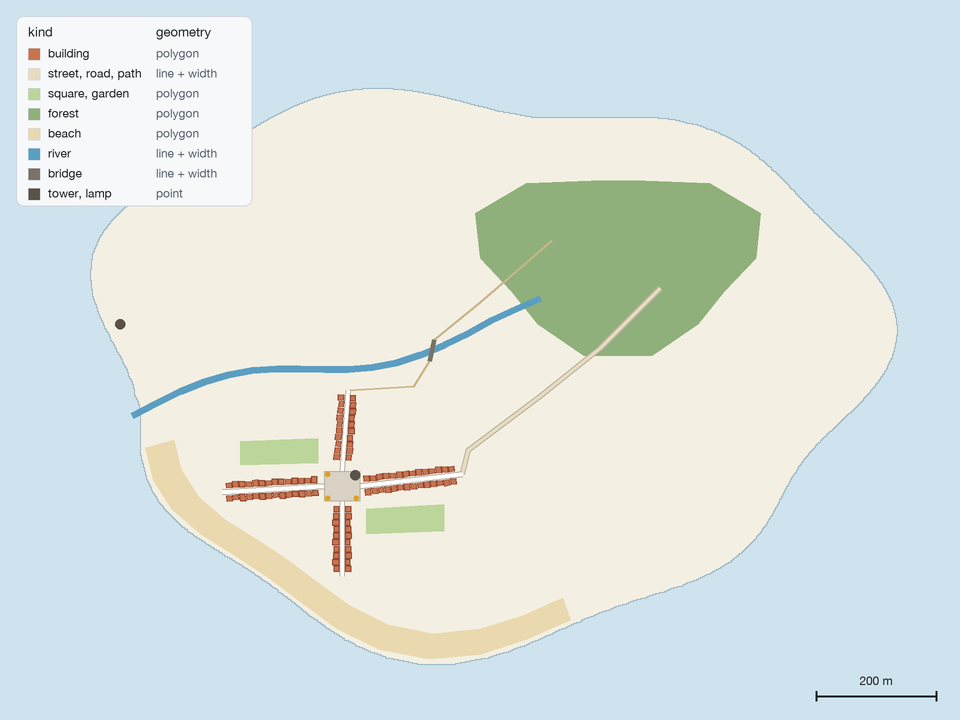
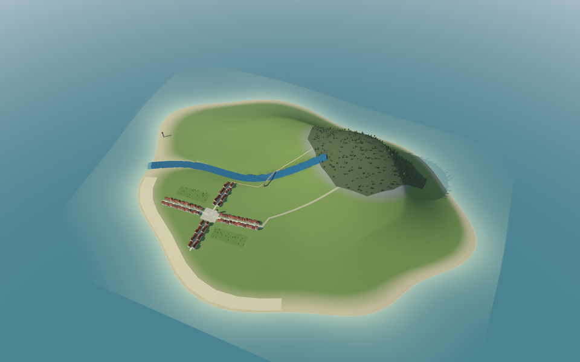
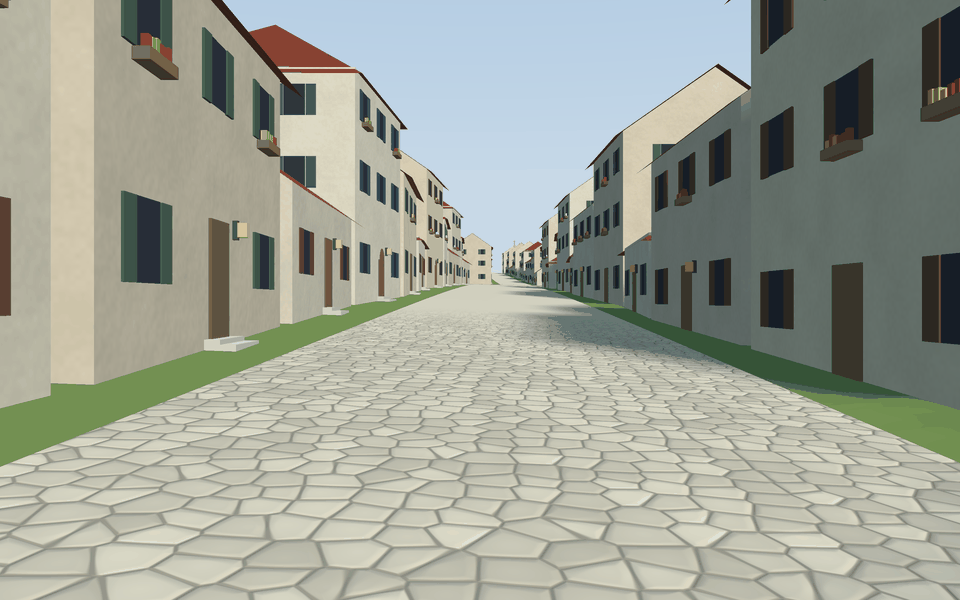

A small made-up island to try the builder with: about 1.6 by 1.2 kilometres of sea and land, a hill of about 150 metres in the north-east with a forest on it, a river running down to the west coast, a beach along the south-west bay and a village of about a hundred houses on two crossing streets around a square. Everything in it is invented, and its numbers are round.

All in examples/island/:
| File | What it is |
|---|---|
map.geojson |
The map, in metres east and north of the island’s centre, one feature per line. Kinds: building (with floors and use), street, road and path (lines with a width in metres), square, garden, forest and beach (polygons), river and bridge (lines with a width), tower and lamp (points). |
relief.json, relief.f32 |
The relief: 160 × 120 cells of 10 metres. Under 0 metres is the sea floor. |
style.yaml |
The full style: plastered houses with tiled gable roofs, facades, gardens with plants, a forest of models, a river and a bridge, a sea at 0 metres. |
style-stone.yaml |
The same, with stone houses and slate hip roofs (style rules). |
style-plain.yaml |
Shapes only, without decoration (decoration). |
models.yaml |
The model library: a fir, a broadleaf tree and a lamp. |
From the repository’s root (GEOS must be installed):
go run ./cmd/build-scene -map examples/island/map.geojson -relief examples/island/relief.json \
-style examples/island/style.yaml -out island.glb
It prints how long each stage took, about 33 pieces and 130,000 triangles, and no warnings.
Swap style.yaml for style-stone.yaml or style-plain.yaml to build the other looks from the
same map.
Open the scene with go-renderer’s viewer, from go-renderer’s folder:
go run ./cmd/visor path/to/island.glb
| Orbiting above it | Walking down the main street |
|---|---|
 |
 |
Every picture of a scene in these docs is one frame of go-renderer’s viewer, captured with
-capture in a 1440 × 900 window (-width 1440 -height 900) and then reduced. Scene coordinates are kilometres, x east and z south, so
the village’s main street is near x = -0.40, z = 0.218 (visor is go run ./cmd/visor in go-renderer):
visor -capture island.png island.glb # the whole island
visor -capture village.png -look-at=-0.17,0.16 -zoom 0.14 island.glb # the village from above
visor -capture square.png -look-at=-0.20,0.205 -zoom 0.07 island.glb # the square, close
visor -capture forest.png -look-at=0.2,-0.15 -zoom 0.12 island.glb # the forest on the hill
visor -capture street.png -walk -eye-height 0.0017 -look-at=-0.40,0.218 \
-heading 85 -pitch 0 island.glb # down the main street
visor -capture street-night.png -night -walk -eye-height 0.0017 \
-look-at=-0.40,0.218 -heading 85 -pitch 0 island.glb # the same, at night
The flat map and the shaded relief were drawn from the same files with a short script; they are drawings, not output of the builder.